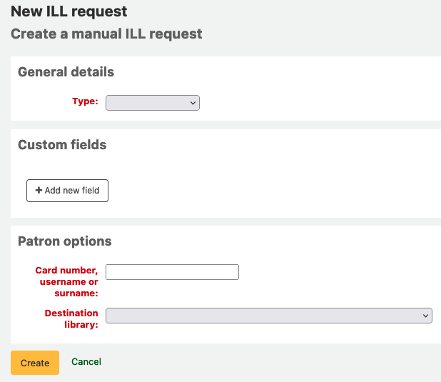

ILL 館際互借申請 / 館際互借送出
ILL (館際互借) 需求模組加入了可申請及管理館際互借或從外部資源取得複本的功能。讀者經由 OPAC他們帳戶的標籤 :ref:`您的館際互借申請 <your-interlibrary-loan-requests-label>`提出申請單，經由圖書館管理者複審及處理。不同的管理者可從館員工作台提出申請。
設定
在使用館際互借模組前，您必須確認您完成了所有的設定。
館際互借模組可以在後端定義不同的申請模式以及工作流程。請參考在 https://wiki.koha-community.org/wiki/ILL_backends 的文件。您至少要定義一個後端。
Next, set your system preferences for interlibrary loans.
負責館際互借的圖書館館員需要得到以下的授權以設定他們的帳號：ill: Create and modify Interlibrary loan requests
館際互借申請模組使用系統判定狀態。您可以新增自定狀態以符合您的館際互借工作流程如 ILLSTATUS 容許值。
ILL 電子郵件通知
Email notifications can be sent to ILL staff when a patron makes a request to modify or cancel an existing request. The notice templates are ILL_REQUEST_CANCEL and ILL_REQUEST_MODIFIED. The ILL staff email address can be configured per library. If this is not set the ILLDefaultStaffEmail system preference will be used.
Notifications can also be sent to patrons for requests that are either available for pick-up or are unavailable and have been canceled. The notice templates are ILL_PICKUP_READY and ILL_REQUEST_UNAVAIL. The notifications are enabled from the patron categories default patron messaging preferences. You can customize the notice text for these notices in Notices & slips in the Tools module.
新增館際互借申請
Get there: More > ILL requests

選擇 ‘New ILL request’ and then Freeform.
备注
此圖示僅供 FreeFrom backend 使用

Select a Type: Book, Chapter, Journal, Journal article, Thesis, Conference, Other, Generic resource.
A different set of fields will display for each type.
Enter as much as information as you like.
Add custom fields, for example if you wished to add a note or if you are using the “Other” type of request.
Under the patron options, enter the patron card number and the library associated with the request.
點擊 “建立”，你將看到一個請求詳情摘要頁面。
备注
If you have enabled the ILLCheckAvailability system preference and installed plugins for the staff interface you will be presented with search results. The user can click on a link to a relevant resource if found or proceed with the ILL request. If no results are found the ILL is completed in the usual way.
You can now manage your request or return to the list of ILL requests by clicking “List requests”.
檢視館際互借申請
From the main ILL requests screen you can view, filter and sort your ILL requests. Click on the ‘List requests’ button from other pages in the ILL module to return to this list.

There is a large amount of data available in the Requests table; scroll right to see all the columns. You can customize the columns of this table in the ‘Table settings’ section of the Administration module (table id: ill-requests).
You can use the ILLHiddenRequestStatuses preference to hide requests with completed statuses by default. Use the filters on the left of the page to display a subset of requests based on your chosen criteria.
管理館際互借申請
點擊 ‘Manage request’ 最後一欄的按鈕。取決於申請狀態，您可能看到如下的按鈕：
編輯請求
you can edit the borrowernumber, biblionumber, branch and can add notes. If you have added custom ILL statuses you can also edit these.
確認申請
送出申請及透過後端一份文件供應服務，像是BLDSS。
送出申請給合作的圖書館。
透過電子郵件送出申請：partner library
轉換供應商
這允許你將請求轉移到一個不同的提供者（後端）。
刪除
完全刪除申請。刪除原因並不會儲存在Koha系統。
還原申請
依照 ‘請求’ 或 ‘由夥伴請求’ 的狀態，館員可以由外部取消請求。狀能回復為 ‘新增’
註記完成
當館際互借申請已填妥使用。
編輯館藏的元數據
Dependent on the backend used for the request you may be able to edit, add or delete some or all of the request metadata. For example, if the metadata has originated from a requester using the FreeForm backend this may need to be edited, whereas metadata from an external recognized source such as BLDSS should not.
顯示供應商的元資料
顯示來自 ILL 供應商的額外元資料，即不在標準請求欄位內元資料。
館際互借請求紀錄
顯示對請求進行修改的歷史記錄。
評論
可以在 ILL 請求中增加評論，讓 ILL 同仁追踪工作的進度。評論以時間依序儲存。包括借閱者詳情及評論的日期。顯示的時候，評論的數量顯示在請求清單中。
借出
This option is only available if you have the CirculateILL preference enabled. See the Circulating ILL materials section.
請求狀態
已安裝的館際互借狀態的完整列表是：
新增請求
已申請
來自合作圖書館的申請
請求回復
取消申請 - 一位讀者已取消申請。
完成
借出
Returned to library
送出申請給合作的圖書館。
If you have a network of partner libraries which permit ILL requests you can manage this through Koha. First, you need to create your partner library accounts:
Check you have a patron category with the code IL. If you don’t, simply create one with this code. You may want to give it the description “Inter-Library Loan” and a category type of Organization.
You will need to create a patron account with this patron category for each partner library.
Each library must have an email address as this will be the mechanism for sending the inter-library loan request.
备注
The notice template is ILL_PARTNER_REQ and the text can be customized from the Notices and slips tool.
您可以使用 ‘Place request with partners’ 選項當在處理申請時。
备注
If you have enabled the ILLCheckAvailability preference enabled you can use plugins to search the catalogs of your partner libraries using Z39.50 prior to confirming the request with a partner.
流通館際互借資料
If you have enabled the CirculateILL preference you can checkout ILL items directly from the ILL request.
當你建立一個*書*類型的請求時，會根據快速新增MARC框架自動建立一個簡短的書目記錄。一旦請求有了合適的狀態，在管理請求的工具欄上就會顯示一個借出按鈕。點擊這個按鈕將使用者能夠向提出請求的用戶或內部統計的讀者借出該館藏。
要借出一個館藏：
點擊借出按鈕。
Select an item type when prompted. An item is created automatically which is attached to the biblio record that was created for the request. The barcode of the item is in the format ILL-requestid.
Next, at the patron checkout screen select a due date. If you do not select a due date the relevant circulation rule will be used to calculate the due date.
一旦館藏被借出，申請的狀態就會變成 ‘已借出’，而在被借入後，狀態會更新為 ‘已退還圖書館’。
作為ILL請求的一部分而建立的書目記錄將在預約表中有一個額外的標籤，允許你在ILL模組中連結到請求。